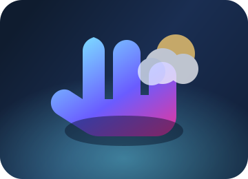
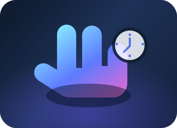

Consultar Clima
Practica la secuencia real con guía visual y feedback instantáneo.

Pulsa “Iniciar práctica” y realiza cada seña frente a la cámara.
Clima
Haz la seña “Clima” cuando HELEN esté lista.
-
H
Activa HELEN Gestos válidos: Start, Activar, Hey Helen
-
Pide el clima Gestos válidos: Clima, Weather
-
Vuelve al inicio Gestos válidos: Inicio, Home
Consultar Hora
Domina la secuencia para pedir la hora con confirmaciones visuales.

Haz cada seña en orden y espera el brillo de confirmación.
Hora
Haz la seña “Reloj” cuando HELEN esté lista.
-
H
Activa HELEN Gestos válidos: Start, Activar, Hey Helen
-
Pide la hora Gestos válidos: Reloj, Hora, Clock
-
Regresa al inicio Gestos válidos: Inicio, Home
Instrucciones
Guía rápida para estudiantes y docentes.
1
Activa la práctica
Pulsa “Iniciar práctica” en la sección elegida. El estado te dirá qué seña realizar.
2
Sigue el halo inferior
El resplandor en la parte baja indica detección correcta. Cambia de color en errores.
3
Gestos principales
H (Start) para activar, C para clima, R para reloj, I para volver.
4
Repite si es necesario
Si una seña no se reconoce, reinicia con H y vuelve a intentarlo. El halo rojo te avisará.
Tip
- Modo sin animaciones disponible para sesiones sensibles al movimiento.
- Los íconos explican cada paso: cámara, brillo inferior y resultado.
- Consulta el botón de práctica cada vez que quieras reforzar una seña.